{kind=link}
{kind=link}
{kind=link}
{kind=link}
{kind=link}
{kind=link}
A natural negative.
Painted highlights shelter dark linen while the background lightens. The painter need not work in reverse.
An image on linen. Three experiments in light, depth, and cloth.
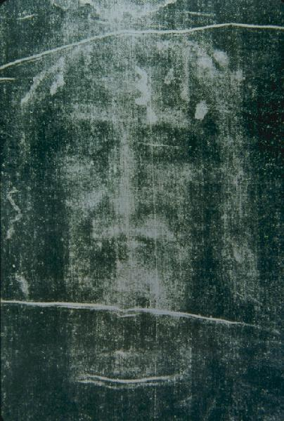
Make an image. Explore a surface.
Unfold a cloth.
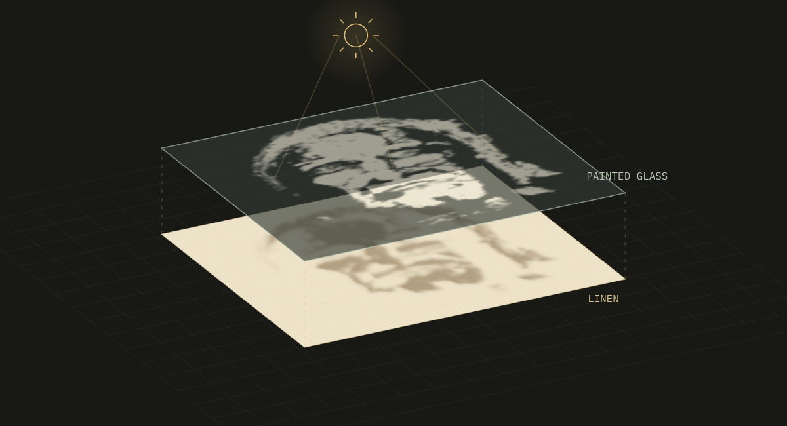
Could sunlight transfer a painted face onto linen? Test N. D. Wilson’s shadow hypothesis.
Paint · Expose · Compare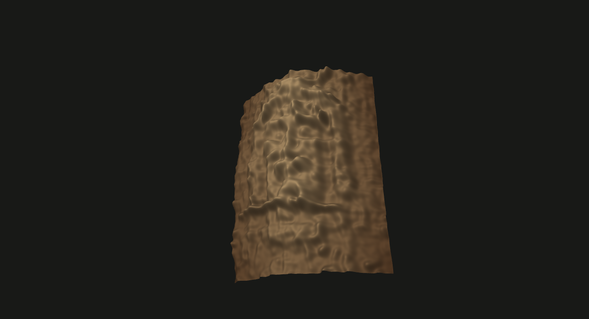
Assume a curved cloth and interpret tones as the gap beneath it. Compare the resulting surface with direct relief.
Rotate · Adjust · Compare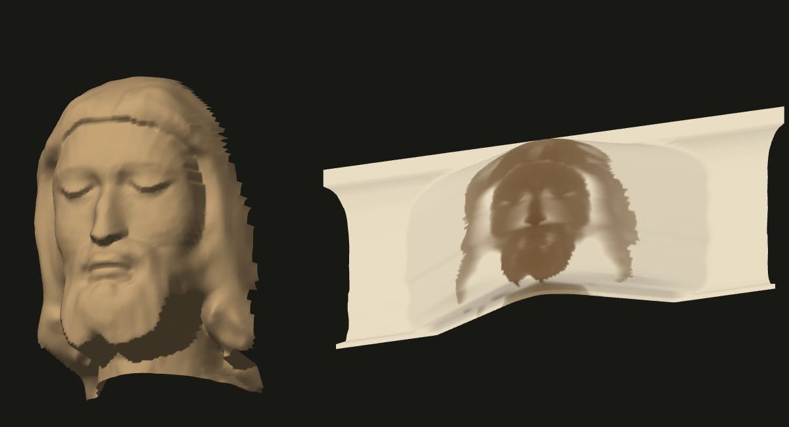
Wrap a full head or a shallow relief. Lay the cloth flat and measure how much the image widens.
Wrap · Unfold · MeasureA faint body image, folds, scorch marks, and repairs. All can affect an image analysis.
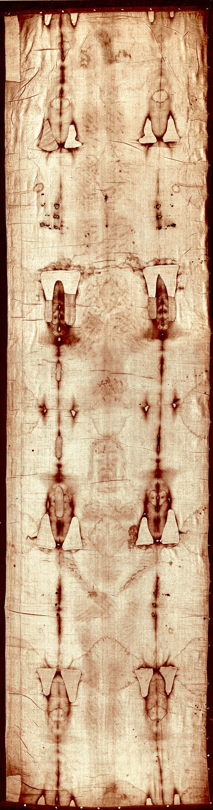
White paint on glass shades darker linen. Exposed areas lighten; sheltered areas stay dark. As the sun moves, the shadows shift and soften.[1]
Try the experiment ↗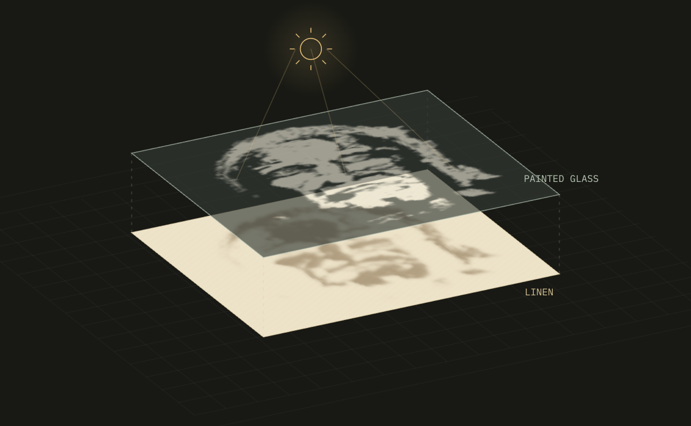
Wilson’s 2005 account includes these physical results. Each photograph pairs the cloth with its negative.
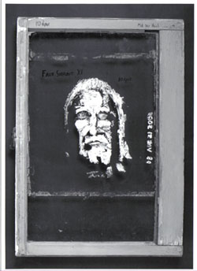
A crop of this face is the simulator’s default input.
Use this painting ↗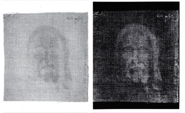
CLOTH / NEGATIVEThe first cloth, oriented roughly along the sun’s path.
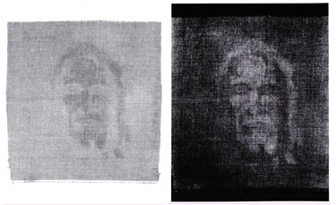
CLOTH / NEGATIVEA changed orientation; Wilson reports more distinct lines.
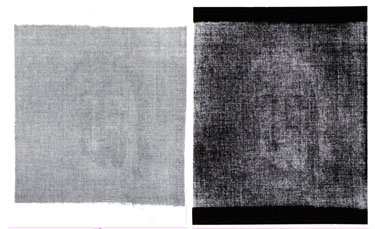
CLOTH / NEGATIVEA fixed lamp produced a different pattern of marks.
Photographs and reported exposures: N. D. Wilson / Shadow Shroud. Durations differ; the model comparisons below use equal dose.
Original account ↗Painted highlights shelter dark linen while the background lightens. The painter need not work in reverse.
The image needs no pigment deposited on cloth. Its fiber chemistry still has to match.
Moving shadows blend brushwork into tones. Too much blur also erases facial detail.
Transferred facial tones can look three-dimensional when plotted as heights. Anatomical accuracy is a separate test.
Microscopic color depth, chemistry, and historical feasibility remain unresolved. What would test the theory? ↗
Dating the cloth and explaining its image require different evidence.
The 1988 radiocarbon tests dated the sampled linen to 1260–1390 CE. Three laboratories participated; sampling and statistical objections remain in the literature.[2]
A 2026 examination found no repair or significant contamination in two retained Arizona fragments. Its scope is those fragments, not every part of the cloth.[3]
Read the evidence ↗Beauchamp’s extracted painting, equal modeled dose, and three shadow paths.
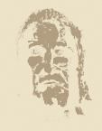
A fixed overhead source preserves the stencil’s detail.
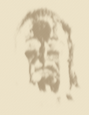
Changing light softens features along its path.
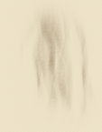
Raising the glass spreads the shadow farther.
Simulated results with an assumed bleaching response. The model is not calibrated to real linen.
Run the comparisons ↗Ten research priorities, from radiocarbon dating to an independent Shadow Shroud replication.